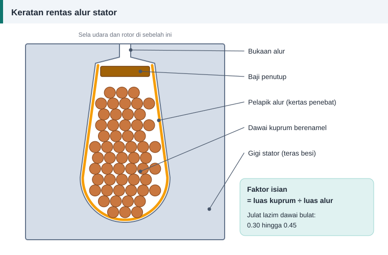

Dawai dan penebat
Faktor Isian Alur: Berapa Banyak Dawai Boleh Masuk
Di atas kertas, 104 lilitan dawai 0.80 mm nampak munasabah. Di bengkel, gegelung itu mungkin tidak dapat ditolak masuk walaupun dipaksa. Semakan mudah yang dipanggil faktor isian mengelakkan kejutan itu.


Takrif
Faktor isian = (bilangan konduktor × luas kuprum satu dawai) ÷ luas alur
Di laman ini, luas kuprum bermaksud luas keratan logam sahaja, tanpa enamel. Luas alur pula bermaksud luas kasar lubang alur sebelum pelapik dipasang. Dengan takrif itu, belitan dawai bulat yang dimasukkan dengan tangan biasanya berada sekitar 0.30 hingga 0.45.
Awas: ada takrif lain
Sesetengah rujukan mengira luas dawai sebagai segi empat, iaitu diameter luar kuasa dua, dan menolak ruang penebat daripada luas alur. Angka mereka jauh lebih tinggi untuk belitan yang sama, selalunya 60% ke atas. Jangan bandingkan nombor daripada takrif yang berlainan.
Ke mana ruang selebihnya pergi
- Pelapik alur dan baji mengambil sebahagian ruang.
- Setiap dawai dibalut enamel.
- Dawai bulat tidak boleh disusun tanpa celah. Susunan paling rapat pun meninggalkan kira-kira 9% ruang kosong.
- Dawai yang dimasukkan dengan tangan tidak tersusun sempurna.
Mengukur luas alur
Tekap sekeping kertas pada muka teras dan gosok dengan pensel untuk mendapat bentuk alur, atau ukur terus dengan angkup vernier. Bahagikan bentuk itu kepada trapezium dan separuh bulatan.
Luas trapezium = (lebar atas + lebar bawah) ÷ 2 × tinggi
Luas separuh bulatan = π × jejari² ÷ 2
Contoh: lebar atas 5.5 mm, lebar bawah 8.5 mm, tinggi bahagian lurus 10 mm dan dasar separuh bulatan berjejari 4.25 mm. Luas = (5.5 + 8.5) ÷ 2 × 10 + 3.1416 × 4.25² ÷ 2 = 70 + 28.4 = 98.4 mm², iaitu kira-kira 100 mm².
Contoh semakan
Alur 100 mm² perlu memuatkan 104 konduktor.
- Dawai 0.80 mm (0.503 mm²): isian = 104 × 0.503 ÷ 100 = 0.52. Terlalu padat.
- Dawai 0.71 mm (0.396 mm²): isian = 0.41. Boleh, tetapi ketat.
- Dawai 0.67 mm (0.353 mm²): isian = 0.37. Selesa.
Kalkulator memilih 0.67 mm untuk contoh ini kerana sasaran isian lalainya ialah 0.40.
Jika dawai tidak muat
- Semak semula bilangan lilitan dan luas alur.
- Gunakan pelapik alur yang lebih nipis tetapi sama kelas penebatnya.
- Gunakan dua dawai halus selari, yang lebih mudah disusun daripada satu dawai tebal.
- Turunkan saiz dawai hanya jika ketumpatan arus masih munasabah.
Jangan sekali-kali mengurangkan lilitan semata-mata untuk memuatkan dawai.
Isian terlalu rendah pun masalah
Gegelung yang longgar bergetar, enamelnya bergesel dan haba sukar mengalir ke teras. Jika isian jauh di bawah 0.30, naikkan saiz dawai. Lebih banyak kuprum bermaksud rintangan lebih rendah dan motor lebih sejuk.
Rujukan dan bacaan lanjut
Artikel berkaitan
Memilih Saiz Dawai Belitan: Ketumpatan Arus dan Luas Keratan
Dawai terlalu halus cepat panas, dawai terlalu tebal tidak muat dalam alur. Ketumpatan arus membantu memilih luas keratan kuprum yang seimbang untuk setiap motor.
Penebat Alur, Baji dan Varnis: Bahan Penebatan Belitan
Dawai kuprum hanya separuh cerita. Pelapik alur, pemisah fasa, baji, sarung dan varnis melindungi belitan daripada litar pintas, getaran serta lembapan sepanjang hayat motor.
Contoh Pengiraan Penuh: Motor 1.1 kW, 4 Kutub, 24 Alur
Ikuti pengiraan lengkap belitan motor 1.1 kW daripada ukuran teras hingga bilangan lilitan, saiz dawai, faktor isian dan berat kuprum, sama seperti keputusan kalkulator.